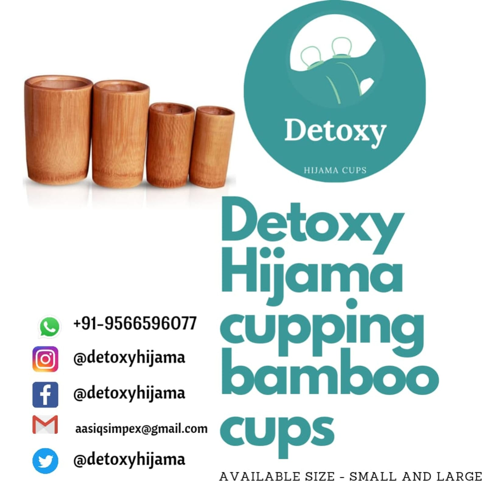

Kits & Sets
Bamboo Cupping Set
₹500
per set
MRP ₹75033% off
Bulk Price
₹450 per set
On orders of 5+ units
Natural bamboo cupping set — antibacterial, eco-friendly, and biodegradable. Traditional therapy rooted in nature with modern hygiene standards.
- ✓100% Natural Bamboo
- ✓Antibacterial Properties
- ✓Eco-Friendly
- ✓Biodegradable
- ✓Traditional Design
🚚 Free Shipping above ₹999
🏭 Direct Manufacturer
↩️ 7-Day Returns
| Material | Natural Bamboo |
| Certification | Antibacterial |
| Type | Traditional |
| Origin | Made in India |
| Eco | Biodegradable |
🚚 Delivery: Pan India — typically 3–7 business days via Speed Post / Blue Dart.
🆓 Free Shipping: On all orders above ₹999.
📦 Packaging: Secure bubble-wrap packaging. Products are dispatched same day if ordered before 2 PM.
↩️ Returns: 7-day hassle-free returns for unused items in original packaging. Contact us at detoxyhijama@gmail.com.
💳 Payment: UPI, cards, net banking, COD available at checkout.